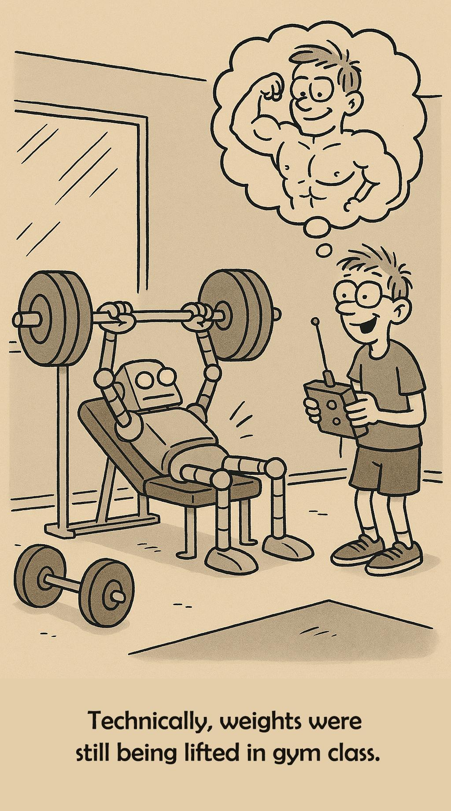
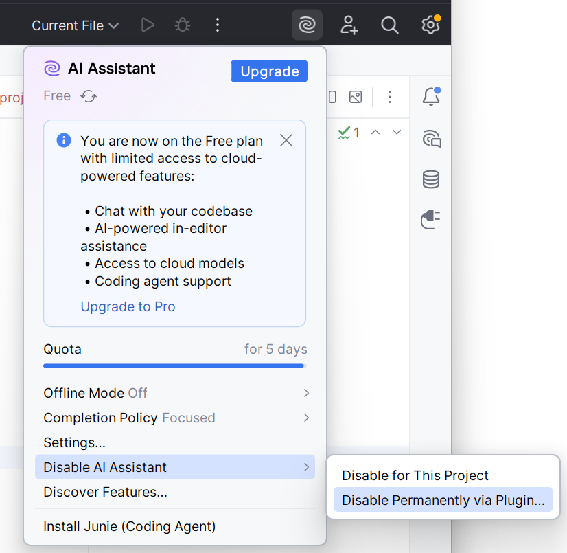

ALTN73 Programmation Fonctionnelle avec Scala
1 Syllabus
2 Déroulement
| Semaine | Séance |
|---|---|
| 40 | CTP |
| 40 | CTP |
| 42 | CTP |
| 44 | Evaluation (20%) + CTP |
| 44 | CTP |
| 46 | Projet |
| 48 | Projet |
| 48 | Evaluation (20%) + Soutenances |
3 Evaluations
Votre note globale sera calculée avec les coefficients suivants :
| Item | Proportion | Format et critères |
|---|---|---|
| TPs | 10% | Rendus, réponses aux questions |
| Evaluation 1 | 20% | QCM et code à compléter |
| Evaluation 2 | 20% | Code à compléter, IntelliJ. Sans IA ni internet. |
| Projet | 50% | 3 personnes, rendu et soutenance |
4 Usage des IA
Référence : Beej’s Guide to Learning Computer Science - Use of AI
| Conseillé | Déconseillé |
|---|---|
| Faire des fiches de cours | Obtenir des corrigés |
| Créer des quiz pour s’entraîner | Générer le code des TPs ou du projet |
| Poser des questions sur une API ou un message d’erreur | Ne pas essayer de comprendre les messages d’erreurs |
| Poser des questions pour éclaircir des points du cours ou d’un énoncé | |
| Générer des données de tests | Générer tous les tests JUnit - En TDD le test est la spec ! |
| Demander de critiquer votre code (mais c’est mieux de demander à votre enseignant !) |
En entreprise, vous serez de plus en plus contraints à utiliser l’IA pour livrer plus rapidement.
Les TPs et projets d’école sont une occasion de pouvoir prendre son temps, de comprendre chaque ligne de code, de poser des questions. Apprendre demande des efforts, d’être confronté à des difficultés et de les surmonter.

4.1 Désactiver l’IA dans IntelliJ
Pour bien apprendre la programmation en Scala dans IntelliJ, il est essentiel de désactiver l’IA ainsi que l’inline code completion.
Etape 1 : désactiver l’IA

Etape 2 : désactiver l’inline completion :
- Allez dans File > Settings > Editor > General > Inline completion
- Décochez “Enable Local Full Line completion suggestions”
- cliquez sur OK